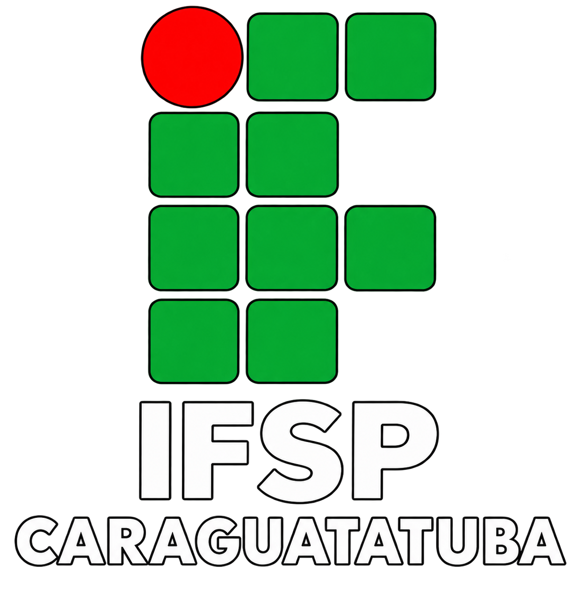

Desafio
Análise e Desenvolvimento de Sistemas
Seja bem-vindo à atividade prática da Semana da Profissão IFSP. Explore os primeiros passos da lógica de programação controlando a tartaruga através de comandos de código simples.
Confira as instruções ao lado para aprender os comandos de movimentação e rotação. Conforme for realizando cada desenho no software, marque a caixa do desafio concluído abaixo!
Para Frente(PF)
Exemplo: pf 100
Para Trás(PT)
Exemplo: pt 100
100 é o número de passos, ele define a distância que você vai andar
Para Direita(PD)
Exemplo: pd 90
Para Esquerda(PE)
Exemplo: pe 90
90 é o número de graus, se for 90 ele vira para o lado, se for 180 ele vira para trás e se for 360 ele dá uma volta
Use Nada(UN)
Serve para sua tartaruga parar de escrever a linha
Use Lápis(UL)
Serve para sua tartaruga voltar a escrever a linha
TAT
Limpa a tela inteira
Desafios de Programação